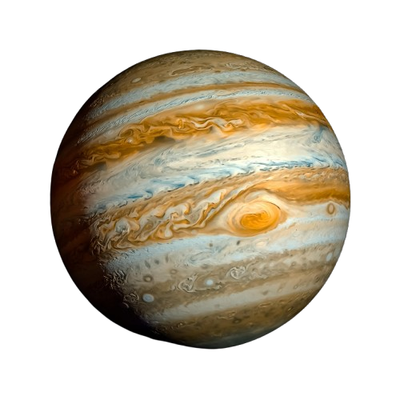

01 / Giant Planet
Jupiter is the largest planet in the Solar System.
THE KING OF PLANETS
Jupiter is the largest planet in our Solar System. It is a giant world of colourful clouds, powerful storms and fascinating moons.
One Year
Cloud-top Average
Diameter

EXPLORE THE GIANT
Jupiter is made mostly of hydrogen and helium. Its famous Great Red Spot is a gigantic storm, and the planet has many fascinating moons.
Jupiter is the largest planet in the Solar System.
A huge atmospheric storm that has lasted for centuries.
Jupiter has a fascinating family of natural satellites.